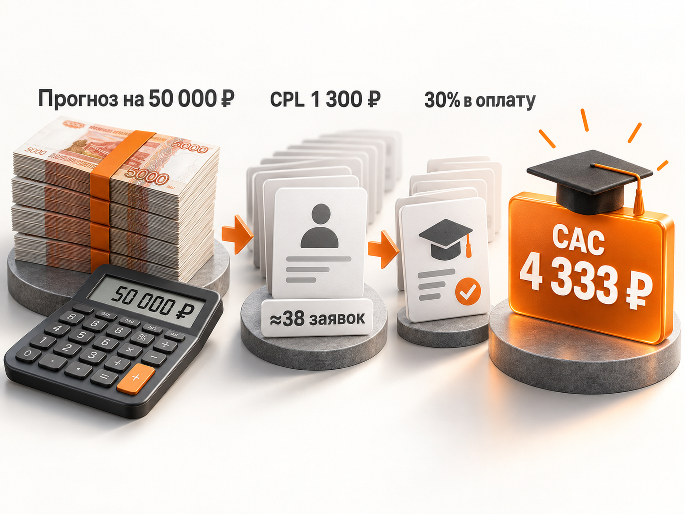

Блог о платном трафике
Продвижение детских центров, кружков и секций через Яндекс Директ
Детские развивающие центры, спортивные секции, школы танцев, робототехника, рисование, музыка и другие кружки можно рассматривать как одну рекламную нишу. Механика выбора у них похожая: родитель ищет занятие для ребёнка, сравнивает несколько вариантов поблизости, изучает расписание, стоимость и педагогов, после чего записывает ребёнка на пробное занятие.
Поэтому Яндекс Директ здесь хорошо подходит для привлечения уже сформированного спроса на Поиске и для дополнительного охвата родителей через РСЯ и Карты.
Но рекламировать просто «детский центр» обычно неправильно. Продвигать нужно конкретные направления: гимнастику для детей 5-7 лет, робототехнику, рисование, подготовку к школе, танцы, футбол и так далее.
Частные детские сады, медицинские услуги, логопедические и коррекционные центры я бы уже рассматривал отдельно. У них другая цена решения, другие мотивы родителей и другая воронка.
Как устроена воронка детского центра
Почти во всех кружках и секциях рекламная воронка выглядит примерно одинаково:
реклама -> заявка -> запись на пробное занятие -> фактическое посещение -> покупка абонемента
Иногда между заявкой и занятием появляется дополнительный этап: звонок администратора, консультация, диагностика или подбор подходящей группы.
Это важный момент. Стоимость заявки сама по себе почти ничего не говорит об эффективности рекламы.
Одна кампания может приводить заявки по 800 ₽, но половина родителей не отвечает на звонки. Другая получает обращения по 1 300 ₽, зато большая часть детей приходит на пробное и покупает абонемент.
Поэтому отдельно нужно считать:
- стоимость заявки;
- стоимость квалифицированной заявки;
- стоимость пришедшего на пробное занятие;
- стоимость нового платящего ученика;
- срок, который ученик продолжает заниматься.
Главная единица измерения здесь - не заявка, а новый платящий ученик.
Спрос и сезонность
Для детских кружков и секций характерна выраженная сезонность. Особенно заметен период перед началом учебного года. В актуальном материале Яндекса по продвижению танцевальных школ отдельно отмечается повышенный спрос на детские программы с сентября до конца года.
Но запускать рекламу только 1 сентября поздно. Кампании нужно собрать, получить первые обращения, проверить поисковые запросы и дать алгоритмам накопить статистику.
Для автоматической стратегии «Максимум конверсий» сам Яндекс рекомендует оценивать первые результаты не сразу, а примерно через 7-14 дней.
Поэтому осенний набор лучше начинать рекламировать заранее, обычно уже в июле-августе.
После основного набора реклама не обязательно выключается. Можно переключить её на:
- добор в незаполненные группы;
- новые направления;
- пробные занятия;
- каникульные программы;
- интенсивы;
- январский набор после праздников.
Для каждой конкретной секции сезонность лучше проверять отдельно по Wordstat и собственной статистике прошлых лет.
Что рекламировать: центр или конкретное направление
Если у детского центра десять направлений, не стоит отправлять весь трафик на страницу со списком из десяти услуг.
У человека обычно есть конкретная задача:
- гимнастика для ребёнка;
- танцы для девочки 6 лет;
- робототехника;
- футбол;
- рисование;
- подготовка к школе.
Значит, рекламная связка должна выглядеть так:
запрос -> конкретное направление -> соответствующее объявление -> страница этого направления
Например, человек, который ищет «робототехника для детей в САО», должен сразу увидеть информацию о робототехнике: возраст, адрес, расписание, стоимость и возможность записаться на пробное занятие.
Не нужно сначала отправлять его на главную страницу большого детского центра и заставлять самостоятельно искать нужный раздел.
Какой оффер использовать
Для кружков и секций проще продавать первый небольшой шаг, а не абонемент сразу.
Чаще всего таким шагом становится:
Записаться на пробное занятие
Оно может быть бесплатным или платным. Бесплатность сама по себе не обязательна. Иногда символическая стоимость даже лучше отсеивает людей, которые оставляют заявку без реального намерения прийти.
Для отдельных направлений первым шагом могут быть:
- диагностика;
- мастер-класс;
- открытое занятие;
- знакомство с тренером;
- тестирование уровня;
- экскурсия по центру.
Официальный материал Яндекса по продвижению детских центров также рекомендует делать запись на занятие одним из основных действий на странице и подчёркивает значение программы, педагогов, удобного расписания, расположения и отзывов при выборе центра.
Каким должен быть сайт под Яндекс Директ
Для этой ниши сайт очень сильно влияет на итоговую стоимость ученика.
На первом экране желательно сразу показать:
- направление;
- возраст ребёнка;
- район, метро или адрес;
- ближайшее расписание;
- стоимость или понятный способ её узнать;
- кнопку записи на пробное занятие.
Ниже нужны реальные фотографии занятий, информация о педагогах и тренерах, программа, отзывы родителей, условия пробного занятия и ответы на основные вопросы.
Особенно важно нормально сделать мобильную версию.
Хороший пример влияния сайта опубликован eLama в июне 2026 года. В проекте школы танцев первоначальная конверсия сайта из рекламного трафика составляла 3,6%, а заявка стоила около 1 992 ₽. После переработки сайта конверсия выросла до 9,42%, а CPL снизился до 1 324 ₽.
В том проекте хорошо работали объявления с пробным занятием и указанием местоположения студии. Отдельные кампании также использовались для разных филиалов.
Сам кейс относится к школе танцев для взрослых, поэтому его CPL нельзя автоматически переносить на детские секции. Но механика локального бизнеса с регулярными занятиями очень похожа и хорошо показывает влияние посадочной страницы на экономику рекламы.
Как настроить Яндекс Директ для детского центра
В 2026 году для такой рекламы можно использовать Единую перфоманс-кампанию. В ней доступны Поиск, РСЯ и Карты, а на уровне групп можно управлять географией, автотаргетингом, тематическими словами, интересами и привычками и сегментами аудитории.
Если проект запускается впервые и данных пока нет, я бы также тестировал Мастер кампаний. Он позволяет быстро проверить разные варианты трафика, после чего уже можно разносить работающие связки по отдельным кампаниям.
Подробнее я разбирал это в статье как настроить Яндекс Директ в 2026 году.
Поиск
Поисковая реклама работает с уже сформированным спросом.
Например:
- детская гимнастика + район;
- секция футбола для детей + район;
- танцы для детей 7 лет + метро;
- робототехника для детей + район;
- кружок рисования для детей + район;
- подготовка к школе + район.
Отдельно стоит собирать географические варианты:
- рядом;
- название района;
- ближайшее метро;
- название жилого комплекса;
- улица.
Общие запросы вроде «куда отдать ребёнка» или «чем занять ребёнка после школы» имеют другой уровень сформированности спроса. Я бы не смешивал их с прямыми коммерческими запросами.
После запуска обязательно нужно регулярно смотреть реальные поисковые запросы.
Особенно внимательно стоит контролировать автотаргетинг. На Поиске и в Картах он сейчас является обязательным, полностью отключить его нельзя. Можно управлять категориями запросов и добавлять нерелевантные запросы в минус-фразы.
Типичные минус-направления:
- вакансии;
- работа;
- зарплата;
- открыть;
- бизнес-план;
- франшиза, если её не продаёте;
- бесплатно, если бесплатных занятий нет;
- онлайн, если работаете только офлайн.
Список нельзя составить один раз перед запуском и забыть. Его нужно обновлять по реальной статистике.
РСЯ
РСЯ в этой нише полезна тем, что позволяет работать не только с человеко…1164 tokens truncated…ычного районного центра я бы начинал тест с относительно небольшого радиуса, например 2-5 км, а затем расширял или сужал его по фактической стоимости учеников.
Но универсального радиуса нет.
На него влияют:
- размер города;
- плотность населения;
- транспорт;
- конкуренция;
- уникальность направления;
- возраст детей.
Для маленького города разумным гео может оказаться весь город. Для Москвы даже 5 км иногда слишком большая территория.
Если филиалов несколько, лучше отдельно анализировать каждый адрес.
Как настроить географию рекламы
Это одна из самых важных настроек в нише.
Родитель может быть готов возить ребёнка через весь город в уникальную спортивную школу, но ради обычного кружка рисования в большинстве случаев выберет вариант поближе.
В Директе можно устанавливать радиус от 0,5 до 10 км вокруг выбранной точки.
Для обычного районного центра я бы начинал тест с относительно небольшого радиуса, например 2-5 км, а затем расширял или сужал его по фактической стоимости учеников.
Но универсального радиуса нет.
На него влияют:
- размер города;
- плотность населения;
- транспорт;
- конкуренция;
- уникальность направления;
- возраст детей.
Для маленького города разумным гео может оказаться весь город. Для Москвы даже 5 км иногда слишком большая территория.
Если филиалов несколько, лучше отдельно анализировать каждый адрес.
Не дробить кампании сильнее, чем позволяет объём данных
У центра может быть десять направлений, но это не означает, что обязательно нужно создать десять отдельных конверсионных кампаний.
Автоматическим стратегиям нужны данные.
По официальной документации Яндекса, для стратегии «Максимум конверсий» ориентир составляет не менее 10 конверсий в неделю.
Если весь центр получает 15 заявок в неделю, а вы разделите его на пять отдельных кампаний, каждая получит слишком мало событий.
Поэтому структуру нужно строить не только по смыслу, но и по объёму.
Например, направления можно оставить разными группами внутри одной кампании, если они работают на одну воронку и одну экономику.
Когда данных становится больше, самые крупные направления уже можно выделять отдельно.
Подробнее этот вопрос разобран в статье как выбрать стратегию Яндекс Директа.
Оплата за конверсии подходит не всегда
Я бы не включал оплату за конверсии автоматически только потому, что она доступна.
Яндекс требует, чтобы недельного бюджета при такой модели хватало минимум на десять конверсий по заданной цене.
Например, если целевая заявка стоит 1 300 ₽:
1 300 ₽ × 10 = 13 000 ₽ в неделю
Это примерно 52-56 тысяч рублей рекламного бюджета в месяц только для обеспечения базового объёма данных.
Если центр может тратить 20 000 ₽ в месяц и при этом разделяет бюджет между четырьмя направлениями, стабильной оптимизации по заявкам ждать намного сложнее.
При небольшом количестве данных я скорее буду тестировать более общую структуру, Мастер кампаний, оплату за клики или объединять статистику, чем пытаться заставить пять маленьких кампаний оптимизироваться отдельно.
Какие свежие показатели есть в открытом доступе
Со свежими и одновременно прозрачными российскими кейсами именно по детским кружкам ситуация неидеальная. В интернете много заявлений вроде «лид по 300-500 ₽», но часто не указаны период, бюджет, география, качество заявок или фактическое количество оплаченных учеников.
Поэтому превращать такую цифру в «средний CPL детского центра» неправильно.
Более надёжная свежая точка сравнения - опубликованный в июне 2026 года кейс локальной школы танцев, где после оптимизации сайта заявка стоила 1 324 ₽ при конверсии сайта 9,42%. До доработки сайта CPL составлял 1 992 ₽.
Для детских центров итог может быть как заметно ниже, так и выше. На стоимость влияют направление, город, конкуренция, возраст ребёнка, оффер, сайт и расстояние до центра.
Поэтому дальше я использую не «среднее по рынку», а расчётный рабочий диапазон для предварительного медиаплана.
Прогноз стоимости заявки и бюджета
Если ещё нет собственной статистики, для первого расчёта я бы заложил 900-1 800 ₽ за квалифицированную заявку.
Это именно рабочий прогнозный диапазон, а не норматив рынка.
Он позволяет не строить медиаплан на слишком оптимистичном предположении о лидах по 300-500 ₽ и одновременно оставляет запас для регионов и сильных локальных предложений.
Получается такой предварительный расчёт:
| Рекламный бюджет | При CPL 900 ₽ | При CPL 1 300 ₽ | При CPL 1 800 ₽ |
|---|---|---|---|
| 30 000 ₽ | около 33 заявок | около 23 | около 17 |
| 50 000 ₽ | около 56 заявок | около 38 | около 28 |
| 80 000 ₽ | около 89 заявок | около 62 | около 44 |
Это только заявки.
Дальше нужен переход к оплатам.
Допустим, для расчёта мы принимаем конверсию квалифицированного лида в нового ученика 30%. Это не рыночная норма, а условие модели.
При бюджете 50 000 ₽ и CPL 1 300 ₽ получится:
50 000 / 1 300 ≈ 38 заявок
38 × 30% ≈ 11-12 новых учеников
Расчётная стоимость нового клиента:
1 300 / 30% ≈ 4 333 ₽
При CPL 1 300 ₽ и конверсии лида в оплату 30% расчётный CAC составит около 4 333 ₽.

Когда такой CAC будет выгодным
Сравнивать стоимость клиента нужно не только со стоимостью первого абонемента.
Если ребёнок занимается несколько месяцев, у бизнеса появляется LTV.
Например, возьмём условную модель:
- абонемент - 7 000 ₽ в месяц;
- средний срок занятий - 5 месяцев;
- выручка с одного ученика - 35 000 ₽;
- валовая маржа - 50%.
Тогда валовая прибыль за жизненный цикл составит:
35 000 × 50% = 17 500 ₽
Если бизнес готов отдавать на привлечение нового ученика до 30% этой суммы:
17 500 × 30% = 5 250 ₽ допустимого CAC
При конверсии заявки в оплату 30% допустимый CPL:
5 250 × 30% = 1 575 ₽
В таком примере заявка за 1 300 ₽ укладывается в экономику, а за 2 000 ₽ уже потребует либо большей конверсии в оплату, либо более высокого LTV.
Все цифры в этом примере условные. Смысл расчёта в другом: сначала определяется допустимая стоимость ученика, а уже из неё рассчитывается допустимый CPL.
Аналитика: что передавать обратно в Директ
Минимально в Яндекс Метрике нужно учитывать:
- отправку формы;
- звонки;
- обращение в мессенджер;
- онлайн-запись.
Но на этом аналитика не должна заканчиваться.
В CRM желательно фиксировать дальнейшие статусы:
заявка -> связались -> записан на пробное -> пришёл -> купил абонемент
Если есть техническая возможность, качественные и оплаченные лиды стоит передавать обратно как офлайн-конверсии.
Тогда алгоритм будет получать информацию не только о том, кто нажимает кнопку на сайте, но и о том, какие обращения действительно становятся клиентами.
Это особенно важно в детских центрах, потому что дешёвая заявка легко может оказаться плохим ориентиром для оптимизации.
Чем отличаются разные направления
Общий рекламный интент у кружков и секций похож, но содержание объявлений должно отличаться.
| Направление | Что обычно ищет родитель | Что показывать в рекламе |
|---|---|---|
| Спортивные секции | Конкретный спорт рядом | Возраст, тренер, зал, пробное |
| Танцы | Направление и возраст | Фото занятий, расписание, пробное |
| Творческие кружки | Интерес ребёнка | Работы учеников, формат занятия |
| Робототехника | Развитие и технологии | Что ребёнок создаст на занятии |
| Подготовка к школе | Конкретный результат | Программа, педагог, расписание |
| Развивающий центр | Несколько направлений рядом | Отдельная страница каждого курса |
Особенно важно не объединять всё в одно универсальное объявление вроде «Детский центр. Развиваем детей от 2 до 14 лет».
Такой текст пытается одновременно продать всё и в результате плохо отвечает на конкретный запрос пользователя.
Основные ошибки при рекламе кружков и секций
Первая ошибка - рекламировать весь центр одной страницей. Родитель ищет конкретное направление, а попадает в каталог из пятнадцати занятий.
Вторая - показываться на весь город без проверки реальной зоны притяжения филиала.
Третья - запускать много маленьких кампаний, которым не хватает данных для обучения.
Четвёртая - считать только заявки и не видеть, сколько детей реально пришло и оплатило занятия.
Пятая - запускать основной осенний набор уже в сентябре вместо подготовки кампаний заранее.
Шестая - использовать РСЯ без нормальных реальных фотографий и сильного первого предложения.
Седьмая - игнорировать Яндекс Карты и плохо заполнять карточку организации.
Восьмая - оптимизировать рекламу под самое дешёвое действие, даже если оно плохо связано с оплатой.
Пошаговый план запуска
- Разделить направления по возрасту, продукту и филиалам.
- Определить для каждого направления реальную зону притяжения.
- Сделать отдельные посадочные страницы или хотя бы отдельные полноценные блоки.
- Сформулировать первый шаг: пробное занятие, мастер-класс, диагностика или консультация.
- Настроить Метрику, звонки и CRM.
- Рассчитать допустимый CAC и CPL из экономики абонемента и удержания учеников.
- Собрать поисковые запросы по направлениям и географии.
- Подготовить реальные фотографии и несколько вариантов креативов для РСЯ.
- Полностью оформить карточку Яндекс Бизнеса.
- Запустить Поиск, РСЯ и Карты в структуре, которая не дробит небольшой объём конверсий.
- Проверять реальные поисковые запросы и категории автотаргетинга.
- Оценивать не только CPL, но и стоимость пришедшего на пробное и нового ученика.
До запуска полезно отдельно рассчитать прогноз поискового трафика. Я подробно разбирал методику в статье прогноз бюджета Яндекс Директ.
Вывод
Детские центры, кружки и секции хорошо объединяются в одну рекламную модель: локальный спрос, решение принимает родитель, первым целевым действием обычно становится пробное занятие, а деньги бизнес получает уже после покупки абонемента.
Основной платный канал, который я бы проверял для такой задачи, - Яндекс Директ с комбинацией Поиска, РСЯ и Карт.
Для предварительного расчёта без собственной статистики можно заложить рабочий диапазон около 900-1 800 ₽ за квалифицированную заявку, но оценивать результат нужно не относительно этой цифры, а относительно собственной экономики.
Если при CPL 1 300 ₽ около 30% качественных заявок превращаются в учеников, стоимость привлечения клиента будет примерно 4 333 ₽. Дальше остаётся сравнить её с реальной маржинальной прибылью за всё время занятий ребёнка.
Именно эта цифра определяет, можно ли масштабировать Яндекс Директ, а не CTR, цена клика или количество заполненных форм.